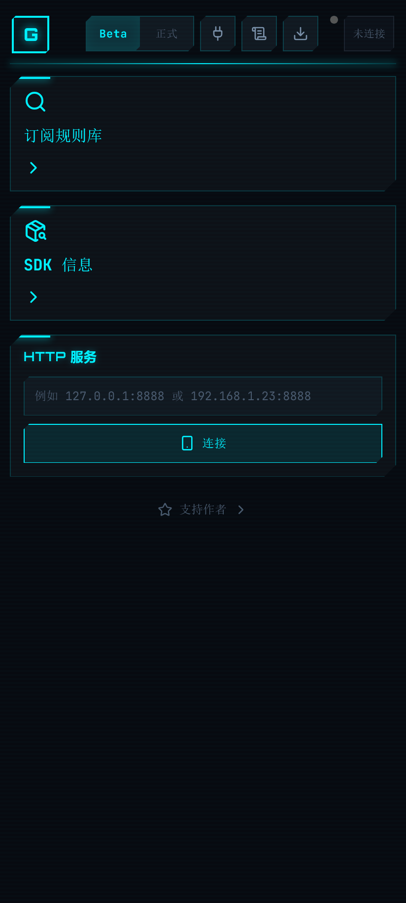
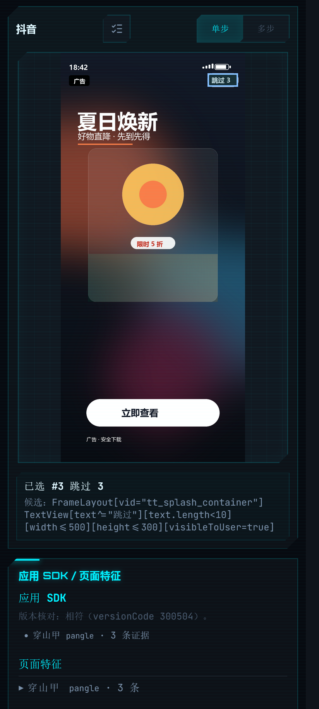
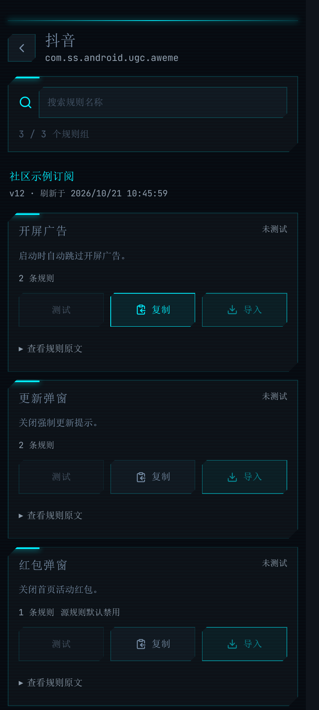

放大镜选点
拖一下，
就选中了。
在截图上把放大镜对准「跳过 / ×」松手，自动向上识别真正可点击的祖先节点，避开文字层与广告跳转热区。17 类策略按稳定性自动排序。



写一条规则，最难的从来不是那一行选择器。而是导出快照、翻几十层节点树、向 AI 解释“右上角那个小叉叉”、在两个 App 之间来回粘贴测试。现在，这些都不需要了。
在线体验
拖动放大镜，对准广告上的关闭按钮后松手。
这就是在 App 里制作一条规则的全部操作。
开通连续包月，立享免广告特权
网页演示仅模拟交互流程，规则为示例数据。
功能
放大镜选点
在截图上把放大镜对准「跳过 / ×」松手，自动向上识别真正可点击的祖先节点，避开文字层与广告跳转热区。17 类策略按稳定性自动排序。
命中率
在 101 个从未见过的应用上，首选规则命中官方标注目标。
选点、生成、校验全在手机上完成。无需 API Key、无需注册，断网也能用。
场景预设
自动填入 matchTime、actionCd、resetMatch 等参数，也支持用一句话自定义场景。
AI 兜底
复制强语法约束 Prompt，发给豆包 / DeepSeek / ChatGPT，粘回即解析。
任意 OpenAI 兼容接口，支持截图多模态，不支持时自动回退纯文本。
一键实测
多条候选一次推入 GKD 内存订阅，触发一次对比效果，不污染正式规则。
订阅规则库
多订阅源本地缓存，按应用名或包名搜现成规则组，能抄作业就不从零开始。
隐私
API Key 只存本机。反馈默认不附截图与节点树，支持框选打码与敏感词自动替换。
上手
不需要电脑，不需要 Root，不需要写一行代码。
遇到广告时，在 GKD 里保存一张快照，并在侧边栏开启 HTTP 服务。
打开 Rule Studio 连接 127.0.0.1:8888，自动拉取快照列表。
放大镜对准「跳过 / ×」松手，选择最接近的广告场景。
推入内存订阅实测，生效后复制到 GKD，Beta 可直接写入。
对比
手搓 / 直接问聊天 AI
GKD Rule Studio
数据
基于 5,539 条真机标注样本，按应用严格隔离切分。
测试集中的 101 个应用，引擎此前从未见过。
610 条跨应用未见样本
首选规则 Top-1 命中率
4,566 条案例库
跨应用同类型检索 Top-1
2,230 对跨版本快照
首选规则稳定率
数据来源：仓库内 bench/SUMMARY.md，可在本地复现。
界面
点击查看大图。
常见问题
不需要。在同一部手机上安装 GKD 与 Rule Studio，开启 GKD 的 HTTP 服务即可开始。
不需要。基础流程完全在本地离线完成。只有使用内置 AI、刷新订阅、查看公告、检查更新与提交反馈时才会联网。
官方正式版 1.12.x（默认）与 1.13.0 Beta。连接时按包名与版本号共同校验，防止渠道误操作。正式版需复制规则后手动添加；Beta 支持通过 /api/appendRules 直接追加（追加而非覆盖，请勿重复点击）。
坦白说，目前还不够强。工作区已提供多步编排模式，但「先点红包 → 返回 → 再关弹窗」这类连续操作的自动生成能力仍有限，建议先单步验证，或结合外部 / 内置 AI 多轮迭代。
聊天 AI 看不到真实节点结构，容易编出不合法的 GKD 语法。Rule Studio 直接基于快照中的真实节点生成规则并做静态校验；确实需要 AI 时，会附带精简节点树、跨应用相似案例与严格语法约束。
选点与生成全部在本地完成。API Key 存在本机 WebView 存储中，不会上传，请勿在共用设备保存长期密钥。GKD HTTP 服务使用明文协议，仅建议在本机或可信局域网使用。